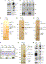
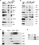
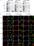
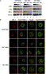
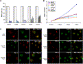
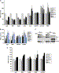

|
|
||||
|
| |||||||||||||||||||||||
|
Volume 21, Issue 6, 17 March 2006, Pages 811-823 |
| ||||
|
|
||||
Article Nuclear Pore Components Are Involved in the Transcriptional Regulation of Dosage Compensation in Drosophila
Sascha Mendjan1, Mikko Taipale1, 4, Jop Kind1, 4, Herbert Holz1, Philipp Gebhardt1, Malgorzata Schelder1, Michiel Vermeulen2, Alessia Buscaino1, Kent Duncan1, Juerg Mueller1, Matthias Wilm1, Henk G. Stunnenberg2, Harald Saumweber3 and Asifa Akhtar1, , 
1European Molecular Biology Laboratory, Gene Expression Programme, Meyerhofstrasse 169117, Heidelberg, Germany
2Department of Molecular Biology, NCMLS (191), Radboud University Nijmegen, HB Nijmegen, The Netherlands
3Humboldt University, Biologie, Zytogenetik, Chausseestrasse 117, 10115 Berlin, Germany
Received 4 August 2005; revised 19 October 2005; accepted 2 February 2006. Published: March 16, 2006. Available online 16 March 2006.
Summary
Dosage compensation in Drosophila is dependent on MSL proteins and involves hypertranscription of the male X chromosome, which ensures equal X-linked gene expression in both sexes. Here, we report the purification of enzymatically active MSL complexes from Drosophila embryos, Schneider cells, and human HeLa cells. We find a stable association of the histone H4 lysine 16-specific acetyltransferase MOF with the RNA/protein containing MSL complex as well as with an evolutionary conserved complex. We show that the MSL complex interacts with several components of the nuclear pore, in particular Mtor/TPR and Nup153. Strikingly, knockdown of Mtor or Nup153 results in loss of the typical MSL X-chromosomal staining and dosage compensation in Drosophila male cells but not in female cells. These results reveal an unexpected physical and functional connection between nuclear pore components and chromatin regulation through MSL proteins, highlighting the role of nucleoporins in gene regulation in higher eukaryotes.
Author Keywords: DNA; DEVBIO
Article Outline
Introduction
Gene expression is a highly complex process that involves several levels of regulation. It is a challenge to understand the interplay of these different regulation processes that range from chromatin remodeling and histone modifications to the coupling of transcription to RNA processing and export through the nuclear pore (for reviews, see Maniatis and Reed [2002] and Narlikar et al. [2002]). An important but poorly understood mechanism of chromatin regulation is spatial positioning in the nucleus and chromosomal architecture. Recent studies on the β-globin locus and HoxB cluster suggest that histone modifications and chromatin condensation cannot solely account for transcriptional regulation but that spatial positioning and chromosomal compartmentalization also play a central role in gene expression (for review, see Sproul et al. [2005]).
Two prominent model systems, which permit investigation of the relationship between transcriptional activity, chromatin structure, and chromosomal compartmentalization, are the inactive female X chromosome in mammals and the hyperactive Drosophila male X chromosome. Both of these model systems are involved in the process of dosage compensation, which ensures equalization of X-linked gene expression in the different sexes. It occurs in various organisms in which sex is determined by heteromorphic sex chromosomes, including mammals, nematodes, and fruit flies. Although species use different mechanisms to achieve dosage compensation, a common theme is the specific alteration of the X chromosome chromatin structure in one sex to modulate transcription of X-linked genes.
Dosage compensation in Drosophila is achieved by an approximately 2-fold transcriptional upregulation of X-linked genes in males. Genetic screens for male-specific lethality in Drosophila have identified genes essential for dosage compensation. The encoded proteins have been termed male-specific lethals (MSLs) and include MSL-1, MSL-2, MSL-3, MLE, and MOF. Together with these proteins, two noncoding RNAs, roX1 and roX2, form the dosage compensation complex (DCC) (for review, see (Lucchesi et al. [2005]). Another reported member of the DCC is the histone kinase JIL-1. Although mutation in jil-1 does not result in a male-specific phenotype, JIL-1 protein physically associates with the DCC and leads to enrichment of phosphorylation of serine 10 at histone H3 (H3S10P) on the male X (Jin et al., 2000).
The DCC defines the Drosophila male X chromosome as a specific chromatin domain with unique properties, which permits the subtle (2-fold) coregulation of hundreds of genes in the course of cell differentiation and fly development (Sass et al., 2003). How this X-specific upregulation is coordinated with gene-specific requirements remains a mystery. The current model posits that the DCC functions as a chromatin remodeling complex, which stimulates transcriptional elongation by histone H4 lysine 16 acetylation (Smith et al., 2001). It is likely that the mechanism of MSL function includes general factors involved in gene expression. These potentially essential or redundant components collaborating with MSLs would not be detected in a genetic screen for male-specific lethality in flies. We decided therefore to take a systematic, biochemical approach to find DCC interactors.
In this study, we have used affinity purification with subsequent extensive mass spectrometric analysis to purify and identify proteins associated with MSLs in flies and humans. We have isolated several new MSL-interacting proteins from fly embryos, Schneider SF4, and human HeLa cells. We demonstrate that there are evolutionary conserved MSL complexes of very similar composition in flies and humans. In addition, we show that MOF associates with another evolutionary conserved NSL complex. Surprisingly, we observed the copurification of several nucleoporins in flies (including the mammalian TPR ortholog Mtor) and the copurification of TPR in humans. We found that Mtor and Nup153 are required for correct localization of MSL proteins on the X chromosome and dosage compensation in male but not in female cells. These results illustrate an unexpected connection between components of the nuclear pore complex (NPC) and dosage compensation in Drosophila.
TAP-MOF and MSL-3FLAG Proteins Are Functional and Associate with the MSL Complex
In order to purify the native RNA/protein-containing MSL complex, we generated transgenic flies expressing either TAP-tagged MOF (TAP-MOF) or FLAG-tagged MSL-3 (MSL-3FLAG). MSL-3FLAG was expressed in an msl-3 mutant background, thus eliminating any potential competition by endogenous MSL-3. The TAP-MOF and MSL-3FLAG transgenes rescued the male-specific lethality associated with mof and msl-3 mutations, and the fusion proteins localized correctly to the male X chromosome (see Figure S1 available with this article online; data not shown). This demonstrates that the tagged transgenes are functional.
Nuclear extracts were prepared from transgenic and wild-type embryos. All purifications were performed under conditions that preserve RNA integrity. Four of the five MSL proteins (MSL-1, MSL-2, MSL-3, and MOF) consistently copurified and eluted from the calmodulin (TAP) and FLAG beads (Figure 1A and Figure S1). We opted for higher stringency during the purification to minimize contamination of nonspecific RNAs and proteins. We did not obtain significant copurification of either MLE or JIL-1. Northern blot (Figure 1B) and RT-PCR (Figure S1) analyses confirmed that both roX1 and roX2 RNAs were enriched and intact in TAP-MOF and MSL-3FLAG affinity eluates. Furthermore, we did not observe any enrichment of 18S ribosomal RNA (Figure 1B) or U6 RNA (Figure S1), indicating minimal contamination by these abundant nuclear RNAs.
 Display Full Size version of this image (142K) Figure 1. Purification of the MOF and MSL-3 Protein Complexes
(A) Western blot analysis of the TAP-MOF purification for MSL proteins. All MSL proteins except MLE could be detected in the final eluate. NXF1 served as a negative control.
(B) Intact RNAs copurify with both TAP-MOF and MSL-3FLAG in Drosophila embryos. Northern blot analysis of roX1 and roX2 RNAs compared with control 18S ribosomal RNA.
(C–E) Silver staining of copurified proteins from stable TAP-MOF Schneider SF4 cells (C), TAP-MOF transgenic embryos (D), and MSL-3FLAG transgenic embryos (E), Molecular markers are indicated in kDa. Asterisks indicate degradation products.
(F) Histone H4-specific HAT activity of TAP-MOF and MSL-3FLAG eluates on reconstituted polynucleosomes. Autoradiograph (top panel) and the corresponding Coomassie gel (middle panel) of histones separated by SDS-PAGE are shown. Western blot analysis of a corresponding blot probed with H4K16Ac-specific antibody is shown in the bottom panel.
(G) Purification of the HA-2xFLAG-hMOF complex. A representative silver-stained gel is shown. Asterisks indicate degradation products.
(H) Confirmation of hMOF protein interactions by Western blotting. The abundant nuclear protein RCC1 was used as a control.
In order to compare purifications between embryos and tissue culture cells, we also generated Drosophila SF4 cells stably expressing TAP-MOF. TAP-MOF eluates from SF4 nuclear extracts revealed similar copurification of MSLs as from embryos (data not shown). Taken together, these data demonstrate that purifications via tagged MOF and MSL-3 result in consistent copurification of MSL proteins and that roX RNAs are stable components of the complex.
Mass Spectrometric Analysis of TAP-MOF and MSL-3FLAG Purifications Identify Interacting Proteins
MSL-3- and MOF-associated proteins were identified by mass spectrometry. MALDI-TOF, nanoelectrospray, and LC-MS/MS analyses identified a number of proteins that consistently copurified with MOF and MSL-3 (Figures 1C–1E). Control purifications performed from wild-type cells and embryos demonstrated that these proteins specifically interact with the tagged proteins (Figures 1C–1E).
In addition to MSL proteins, we identified a number of previously characterized proteins in the complexes. The TAP-MOF complex contained Z4 (Eggert et al., 2004), Chriz/Chromator (Rath et al., 2004), MBD-R2, Mtor (Zimowska et al., 1997), Nup153 (Sukegawa and Blobel, 1993), wds (Hollmann et al., 2002), and α-tubulin. Essentially the same components were purified from embryos and cells with two exceptions. Dis3 (Cairrao et al., 2005) and Chd1 (Stokes et al., 1996) were identified in embryos but not in SF4 cells, while Nup98 (Radu et al., 1995) was only detected in the SF4 cell purification (compare Figures 1C and 1D). Cell-type-specific interactions or varying abundances in extracts may account for the observed difference in the TAP-MOF-associated proteins. Mass spectrometric analysis of MSL-3FLAG purification identified Mtor, MBD-R2, Nup160 and Nup154, Dis3, Rrp6, α-tubulin, and EIF-4B (Figure 1E).
Additionally, four uncharacterized proteins (CG1135/MCRS2, CG4699/NSL1, CG18041/NSL2, and CG10081/NSL3) were identified in TAP-MOF purifications (Table 1). We named the other new proteins nonspecific lethals (NSLs) because disruption of these genes by P element insertions in Drosophila is lethal in both sexes, in contrast to male-specific lethal genes (data not shown).
List of the Proteins Identified in TAP-MOF and HA-2xFLAG-hMOF Purifications
Drosophila Human Name Mascot Score (Number of Peptides) Domains Mascot Score (Number of Peptides) Name MOF 1251 (34) Chromo barrel, MYST homology 879 (57) hMOF MSL-1 344 (14) Coiled coil, PEHE 530 (30) hMSL1 MSL-2 (7) RING finger, PHD finger 353 (18) hMSL2 MSL-3 240 (24) Chromo barrel, MRG homology 359 (33) hMSL3 No clear ortholog N/A 2 × Tudor 174 (9) PHF20L1 Mtor (18) Coiled coil (30) TPR Nup153 (13) Zinc finger, Ran binding domain Not found (Nup153) Z4 156 (7) CTCF-like zinc finger N/A No clear ortholog Chromator/Chriz 58 (2) Chromodomain N/A No clear ortholog MBD-R2 561 (18) CHAP1, 2 × Tudor, MBD1, ZnF, PHD finger 155 (12) PHF20 NSL1 (CG4699) 370 (18) Coiled coil, PEHE 864 (31) hNSL1 (KIAA1267) NSL2 (CG18041) 98 (10) Two C/H-rich domains 75 (8) hNSL2 (FLJ20436) NSL3 (CG8233) 244 (14) α/β hydrolase fold 840 (36) hNSL3 (FLJ10081) WDS 137 (9) Seven WD40 repeats 347 (35) WDR5 dMCRS2 (CG1135) 331 (16) Forkhead-associated domain (FHA) 471 (39) MCRS2 Dis3 (10) Nucleotide binding domain Not found DIS3 (dHCF1) not found Kelch repeats, Fn3 885 (18) HCF-1 (OGT) not found TPR, glycosyltransferase 174 (9) OGT No clear ortholog N/A Forkhead, FHA 130 (10) ILF-1 Compilation of mass spectrometry data obtained using LC-MS/MS and MALDI-TOF from MOF complexes isolated from Drosophila embryos and human HeLa cells. For proteins identified by MALDI-TOF using peptide search tool (www.mann.embl-heidelberg.de), only the number of peptides is indicated. 1PHF20 lacks the THAP and MBD domains present in the Drosophila ortholog, MBD-R2.
TAP-MOF- and FLAG MSL-3-Eluted Complexes Are Enzymatically Active
We next examined the enzymatic activity of the purified complexes. Both TAP-MOF and MSL-3FLAG elutions were enriched in histone H4-specific acetylation activity when subjected to histone acetyltransferase assays on reconstituted polynucleosomes. Strikingly, the acetylation was specific for lysine 16 of histone H4 (Figure 1F), and no enrichment of histone H4 lysine 12 or histone H3 lysine 23 acetylation was observed (data not shown). Thus, both purifications resulted in elution of enzymatically active complexes.
MOF Complexes Are Evolutionary Conserved
All Drosophila MSL proteins have mammalian orthologs. To address the evolutionary conservation, we purified the human hMOF-containing complexes from a stable HeLa cell line expressing hMOF tagged with one haemagglutinin (HA) and two FLAG epitopes (HA-2xFLAG-hMOF). The characterization of the interacting proteins revealed striking similarities in the complex composition between flies and humans (Figure 1G and Table 1).
Copurification of mammalian MSL orthologs showed that DCC is an evolutionary conserved protein complex. hMSL1, hMSL2, and hMSL3 were all present in the hMOF complex (Figure 1G and Table 1). Similar to Drosophila DCC, RNA helicase A (the ortholog of MLE) was not present in the complex, which is consistent with our previous observations (Taipale et al., 2005). Furthermore, we identified two isoforms of hMSL3, hMSL3a and hMSL3c, copurifying with hMOF. The former represents the full-length protein, while the latter is an alternative splice isoform lacking the N-terminal chromobarrel domain (Figures 1G and 1H and data not shown).
In addition to the MSL proteins, most of the other proteins copurifying with TAP-MOF were also found in the hMOF complex (Table 1). Z4 and Chriz/Chromator (Chr) lack clear mammalian orthologs, which could explain their absence (data not shown). However, the Mtor ortholog TPR was identified in the HA-2xFLAG-hMOF purification. Human-specific proteins included the transcriptional coactivator HCF-1, O-linked N-acetylglucosaminetransferase OGT, and the forkhead and FHA domain containing transcription factor ILF-1/FOXK2. Interaction of hMSL3, hNSL1, hNSL2, hNSL3, and HCF-1 was further confirmed by Western blot analysis of eluted complex (Figure 1H). Similar to the TAP-MOF and MSL-3FLAG complexes, the HA-2xFLAG-hMOF complex specifically acetylated histone H4 at lysine 16 on mononucleosomes (Figure S1).
Taken together, the data demonstrate that MOF interactions are evolutionary conserved and that the DCC is an evolutionary ancient complex that acetylates histone H4 at lysine 16.
MOF Associates with Two Distinct Multiprotein Complexes in Fruit Flies and Mammals
In this study, we have focused on the interaction of MSL proteins with Z4, MBD-R2, Mtor, and Nup153 in Drosophila for which we generated specific antibodies. Coimmunoprecipitation experiments with MOF and MBD-R2 antibodies confirmed that Mtor, Nup153, Z4, Chr, and MBD-R2 interact with MOF, albeit with varying efficiencies (Figure 2A). The interaction of MBD-R2 with MOF was stronger than with Mtor or Z4 in these assays, as indicated by the amount of protein immunoprecipitated compared with the input.
 Display Full Size version of this image (67K) Figure 2. MOF Associates with Two Distinct Complexes in Fruit Flies and Mammals
(A) Immunoprecipitation from Drosophila embryo nuclear extract with α-MOF or α-MBD-R2 antisera. The blot was probed with various antibodies as indicated.
(B) Same as in (A), except immunoprecipitations were performed with NSL1, MOF, and MSL-1 antibodies.
(C) Glycerol gradient fractionation (20%–50%) of HeLa nuclear extract. Fractions were probed with antibodies against hMOF, hMSL1, hNSL1, hNSL3, and HCF-1.
(D) GST pulldown assay with PEHE domain of hNSL1 and GST only. Equal amounts of hMOF and dESC were used in the reaction.
Further immunoprecipitation experiments showed robust interactions of NSL1, WDS, MBD-R2, Chr, MSL-1, and MSL-3 with MOF (Figure 2B). However, NSL1 and MSL-1 interacted with a nonoverlapping set of proteins. WDS, Chr, MBD-R2, and MOF coimmunoprecipitated with NSL1. MSL-1 interacted with MSL-3 and MOF and to a lesser extent with Chr but not with the other proteins. Interactions were specific, as we could not detect coimmunoprecipitation of the abundant nuclear proteins Mi-2 or NXF1 (Figure 2B).
To further verify the presence of two complexes, HeLa nuclear extract was separated on 20%–50% glycerol gradient, and collected fractions were analyzed by Western blotting (Figure 2C). While human NSL1 and NSL3 predominantly resided in an 300–400 kDa complex, hMSL3 was present in a low-molecular-weight complex of 100–200 kDa (Figure 2C). However, hMOF could be detected in both NSL and MSL fractions. Also, HCF-1 sedimented into many fractions, which is consistent with previous observations (Wysocka et al., 2003).
Further analysis of NSL1 revealed that, similar to MSL-1, it also contains a PEHE domain. MSL-1 interacts with MOF via its PEHE domain in vitro (Morales et al., 2004). Interestingly, we find that the PEHE domain of hNSL1 interacted directly with hMOF in a GST pull-down assay, whereas Drosophila ESC (extra sex combs) protein did not show any interaction (Figure 2D).
Our data indicate that MOF is a subunit of at least two independent protein complexes in Drosophila and mammals. These complexes are bifurcated, most likely, by a direct interaction of MSL-1 and NSL1 with MOF.
Localization of MSL Proteins Is Unaffected in Z4 Hypomorphic Mutants or in MBD-R2-Depleted Cells
To examine the role of Z4 protein in dosage compensation, we performed immunolocalization studies on polytene chromosomes in wild-type flies and hypomorphic mutants of Z4 protein (Eggert et al., 2004). These studies revealed that, although Z4 and Chriz bind interbands on all chromosomes, they do not show extensive colocalization with MSL proteins on the male X chromosome (Figure S2). In Z4 mutants, all MSL proteins remained associated with the X chromosome, albeit with a more diffuse staining profile (Figure S2).
Since MOF and MBD-R2 robustly coimmunoprecipitate (Figure 2A), we next tested the effect of its depletion on the localization of MSL proteins on the male X chromosome in SL-2 cells. MBD-R2 protein appeared nuclear in control EGFP dsRNA-treated cells (Figure S2). We could deplete 90% of MBD-R2 protein as detected by Western blot analysis (Figure S2). However, localization of MSL1, MSL-3, and MOF appeared unaffected in these cells (Figure S2).
These results show that MOF interacts with Z4, Chriz, and MBD-R2, but disruption of this interaction does not affect the localization of MSL proteins on the X chromosome. However, these proteins may be involved in other stages of dosage compensation.
Mtor and Nup153 Are Required for the X-Chromosomal Localization of the MSL Proteins
Interestingly, the nuclear-pore-associated protein Mtor/TPR was identified in all four purifications. Mtor is proposed to be a part of the nuclear basket, interacting with Nup153, and is implicated in spindle matrix assembly in Drosophila (Cordes et al., 1998 and Zimowska et al., 1997). Since Mtor mutants cause embryonic lethality in Drosophila (Qi et al., 2004), we used RNAi in SL-2 cells to study the function of Mtor and Nup153 proteins in dosage compensation. However, depletion of some nucleoporins can lead to defects in nucleocytoplasmic transport. Therefore, to exclude this possibility, we prepared extracts separating cytoplasmic and nuclear fractions. RNAi-mediated knockdown of Mtor and Nup153 depleted 90% and 70%–80% of the proteins, respectively (Figure 3A, compare lanes 1–3 with lanes 5–7 and 9–11). Endogenous MSL-1, MSL-2, MOF, MSL-3, MLE, and Z4 protein levels remained unaffected and mainly nuclear (Figure 3A, compare lanes 1–3 with 4, 5–7 with 8, and 9–11 with 12; Figure S3). roX2 RNA levels were reduced approximately 2-fold but remained nuclear (Figure S3). roX1 RNA is not expressed in SL-2 cells and was therefore not included in the analysis.
 Display Full Size version of this image (189K) Figure 3. Mtor and Nup153 Knockdown in SL-2 Cells Causes Delocalization of MSL Proteins from the X Chromosome
(A) SL-2 cells were incubated with EGFP, Mtor, or Nup153 dsRNA. The nuclear extracts (N) (100%, 30%, or 10%) and 100% of the cytoplasmic extracts (C) were separated on SDS-PAGE, and Western blot analysis was performed. Blots were probed with the antibodies against Mtor, Nup153, MSL-1, MOF, MSL-3, Z4, and tubulin as indicated.
(B) Confocal microscopy was performed on SL-2 cells treated with EGFP, Nup153, and Mtor dsRNAs. For this purpose, cells were immunostained with antibodies against MSL-1 (Ba, Bg, and Bm), MSL-3 (Bb, Bh, and Bn), MOF (Bc, Bi, and Bo), Nup153 (Bd, Bj, and Bp), Mtor (Be, Bk, and Bq), and Z4 (Bf, Bl, and Br). In addition, cells were also incubated with FITC-labeled WGA (green) to visualize the nuclear envelope (+WGA panel). Arrows indicate residual staining of MSL-1 and MSL-3 in Mtor knockdown cells in 5% of total population.
In EGFP dsRNA-treated cells, immunostaining for MSL-1, MSL-3, or MOF visualized by confocal microscopy appears as a clear X-chromosomal territory staining (Figures 3Ba–3Bc). Mtor and Nup153 predominantly localize to the nuclear rim (Figures 3Bd and 3Be) as visualized by costaining with wheat germ agglutinin (WGA). Z4 in SL-2 cells appeared nuclear (absent from the nucleolus), which is consistent with it being a chromatin-interacting protein (Figure 3Bf; Eggert et al., 2004).
In MSL-1 dsRNA-treated cells, MSL-1, MSL-3, and MOF were no longer enriched on the X chromosome, yet localization of Mtor, Nup153, and Z4 remained unaffected (Figure S3). These results are consistent with MSL-1 being important for the localization of other MSL proteins (Buscaino et al., 2003). Interestingly, cells treated with Nup153 or Mtor dsRNA displayed a phenotype similar to that of MSL-1 knockdown cells. The typical localization of MSL-1, MSL-3, and MOF on the X chromosome was compromised (Figures 3Bg–3Bi and 3Bm–3Bo). In more than 90% of the cells, no clear X-chromosomal staining was detectable. Nup153 and Mtor knockdown resulted in residual staining of the X chromosome with MSL-1 and MSL-3 in about 5% of cells (Figures 3Bg, 3Bh, 3Bm, and 3Bn, see arrows). In contrast, MOF was readily detectable in the nucleus, yet appeared evenly dispersed in the nucleoplasm (Figures 3Bi and 3Bo). NPCs were still intact, as shown by nuclear rim staining with WGA (Figures 3Bj and 3Bp). Consistent with previous reports, loss of Nup153 also affected Mtor localization (Hase and Cordes, 2003) (compare Figures 3Be and 3Bk).
We did not observe significant changes in total MSL protein levels or a change in distribution between nuclear versus cytoplasmic extracts after depletion of Mtor or Nup153. Thus, the observed loss of typical X-chromosomal staining in Mtor- and Nup153-depleted cells is not due to changes in MSL protein abundance or defective nuclear transport. However, to further address whether the loss of MSL localization on the X chromosome in Mtor-depleted cells could be due to defects in general mRNA export, the intracellular distribution of bulk mRNA in Mtor cells was analyzed by in situ hybridization with fluorescently labeled oligo(dT) probe (Figure 4). As previously reported, cells depleted of NXF1 showed substantial nuclear accumulation of poly(A)+ RNAs consistent with its essential role in RNA export (Herold et al., 2003). However, MSL-1 localization remained unaffected in NXF1-depleted cells. In contrast, we did not observe a significant nuclear accumulation of poly(A)+ RNA in Mtor-depleted cells, yet typical MSL staining on the X chromosome was compromised in these cells (Figure 4B). This effect was specific, since depletion of several other nucleoporins (Nup154, Nup160, Nup98, Nup214, and Nup62) did not affect localization of MSL proteins on the X chromosome, although both growth and appearance of these cells was affected (Figure 5 and data not shown). Taken together, our data indicate that the MSL proteins specifically require Nup153 and Mtor for correct localization to the male X chromosome.
 Display Full Size version of this image (112K) Figure 4. Mtor Knockdown in SL-2 Cells Does Not Cause Bulk mRNA Accumulation in the Nucleus
(A) SL-2 cells were incubated with EGFP, Mtor, or NXF1 dsRNA. Of total extracts, 100%, 30%, or 10% were separated on SDS-PAGE, and Western blot analysis was performed. Blots were probed with the antibodies against NXF1, Mtor, MSL-1, and tubulin as indicated.
(B) Confocal microscopy was performed on SL-2 cells treated with EGFP, Mtor, or NXF1 dsRNAs. Cells were immunostained with antibodies against MSL-1 (red) and Nup153 (green). poly(A)+ RNA was detected by fluorescent in situ hybridization (FISH) using labeled oligo dT probe (yellow).
 Display Full Size version of this image (91K) Figure 5. Depletion of Nup160, Nup154, Nup98, Nup62, and Nup214 Does Not Affect X Chromosomal Localization of MSL Proteins
(A) Quantitative RT-PCR analysis of the knockdown efficiency of Nup160, Nup154, Nup98, Nup62, and Nup214 in two different experiments (1 and 2; indicated as twin columns). RNA concentration was measured relative to PolII transcripts in mock. Levels of a particular transcript in mock samples were normalized to 100%. Error bars are standard deviations within each experiment.
(B) Growth curve of cells depleted for various nucleoporins as indicated. Cells were counted after 0, 3, 5, and 8 days after dsRNA treatment.
(C) Confocal microscopy was performed on SL-2 cells treated with Nup154, Nup160, Nup98, Nup62, and Nup214 dsRNA. For this purpose, cells were immunostained with either MSL-1, MSL-2, Nup153, or Mtor as indicated. The right panels correspond to merged images.
Nup153 and Mtor Are Required for Transcriptional Regulation of Dosage-Compensated Genes
The absence of MSL proteins in male flies leads to an approximately 2-fold transcriptional downregulation of dosage-compensated X-linked genes (reviewed in Lucchesi et al. [2005]). To determine whether Mtor and Nup153 are required for dosage compensation, we measured gene expression by quantitative RT-PCR after Mtor and Nup153 knockdown. We analyzed classical dosage-compensated genes pgd, BRC, and dspt6 as well as the roX2 gene, which acts as a high-affinity site for the DCC on the X chromosome. The X-linked runt gene, which is dosage compensated in an MSL-independent manner (Smith et al., 2001), and four autosomal genes, GAPDH, AcCoAS, E4BP, and PolII, were included as controls. Interestingly, expression of all the X-linked genes tested was reduced approximately 2-fold in MSL-1-, Mtor-, and Nup153-depleted cells in comparison to EGFP dsRNA-treated cells (Figure 6A, compare white columns to gray and black columns). We did not observe significant downregulation of runt, GAPDH, or E4BP, while AcCoAS expression increased slightly in MSL-1-depleted cells (light gray columns). The effect of Mtor and Nup153 on dosage compensation was specific, since the depletion of five other nucleoporins (Nup62, Nup98, Nup154, Nup160, and Nup214) did not affect dosage compensation of X chromosomal genes (Figure 6B). Instead, we observed an accumulation of almost all RNAs tested, suggesting a general RNA transport defect in Nup98-, Nup154-, and Nup160-depleted cells.
 Display Full Size version of this image (110K) Figure 6. Nup153 and Mtor Knockdown in SL-2 Cells Shows Downregulation of X-Linked Gene Expression
(A) Quantitative PCR analysis of pgd, BRC, dspt6, runt, GAPDH, AcCoAS, and E4BP in EGFP (white), MSL-1 (light gray), Nup153 (dark gray), and Mtor (black) dsRNA-treated cells. Results of two independent experiments are shown as twin columns for example (EGFP-1 [lane 1] and EGFP-2 [lane 2]. Error bars are standard deviations within each experiment. Expression levels were normalized against autosomal gene PolII and set to 100% for each gene in EGFP-treated cells. The Y axis shows RNA levels in percentage (%).
(B) Quantitative PCR analysis of pgd, BRC, GAPDH, and EF4BP in EGFP (white), Nup153 (dark gray), Mtor (black), Nup214 (gray), Nup62 (light gray), Nup98 (light blue), Nup154 (light purple), Nup160 (dark purple), and MSL-1 (dark blue) dsRNA-treated SL-2 cells. Error bars are standard deviations within each experiment. Expression levels were normalized against autosomal gene PolII and set to 100% for each gene in EGFP-treated cells. The Y axis shows RNA levels in percentage (%).
(C) Kc cells were treated with dsRNAs targeting Sex-lethal (SXL) (lanes 4–6) or EGFP (lane 8) as a negative control. Untreated SL-2 (lanes 1–3) and Kc cells (lane 7) were incubated under mock RNAi conditions in parallel. Cells were collected after 7 days, and 10 μg of whole-cell protein extracts was used for SDS-PAGE and immunoblotting with antibodies against MSL-2, SXL, or α-tubulin as indicated.
(D) Quantitative PCR analysis of pgd, BRC, dspt6, EF4B, and GAPDH in EGFP (white), Nup153 (dark gray), and Mtor (black) dsRNA-treated Drosophila Kc cells. Results of two independent experiments are shown as twin columns for example (EGFP-1 [lane 1] and EGFP-2 [lane 2] and so on). Error bars are standard deviation within each experiment. Expression levels were normalized against autosomal gene PolII and set to 100% for each gene in EGFP treated cells. The Y axis shows RNA levels in percentage (%).
Finally, we tested whether Nup153 and Mtor were essential for dosage compensation only in male cells or whether there was a general requirement for these nucleoporins in female cells for X chromosomal genes. For this purpose, we compared the expression levels of dosage-compensated and autosomal genes in SL-2 cells and Kc cells. We could verify that Kc cells are indeed female, as they express SXL, the female-specific regulator of sex determination and dosage compensation, but express very little MSL-2 (Figure 6C, compare lanes 1–3 with lanes 7 and 8). We could efficiently deplete Mtor and Nup153 also in Kc cells (data not shown), but we did not observe a significant reduction in expression of pgd, BRC, and dspt6 in these cells, in contrast to SL-2 cells (Figure 6D). Taken together, these results show a specific requirement for Mtor and Nup153 for dosage compensation of pgd, BRC, and dspt6 in male cells.
MOF Associates with Two Distinct Multiprotein Complexes
The purification of the MSL complex revealed quite an unusual complex composition. One would expect that a complex thought to modulate transcription and/or chromatin structure would contain a significant number of classical transcription factors, some of the numerous components associated with RNA polymerase II, or at least subunits of the ubiquitous chromatin remodeling and modifier complexes. However, none of these components was found. Instead, there seems to be a core MSL complex that interacts substoichiometrically with nucleoporins (Mtor, Nup153, Nup160, Nup98, and Nup154), interband binding proteins (Z4, Chromator/Chriz), and exosome components (Rrp6, Dis3).
Our results suggest that MOF is a subunit of two independent complexes in mammals and fruit flies. Several lines of evidence support this notion. This includes coimmunoprecipitation experiments and glycerol gradient centrifugation. Furthermore, hMOF was recently found in the MLL1 methyltransferase complex together with HCF-1, MCRS2, WDR5, NSL1, and PHF20, but this complex did not contain hMSL1 (Dou et al., 2005). Finally, purification of the hMSL3 complex (data not shown) provides further evidence that hMSL3 does not associate with many of the MOF-interacting proteins. Therefore, we suggest that the NSL complex contains at least MOF, NSL1, NSL2, NSL3, MCRS2, MBD-R2, and WDS, and in humans also HCF-1 and OGT.
The results presented here also suggest a molecular mechanism as to how the MOF complexes bifurcate. Both MSL-1 and NSL1 contain a PEHE domain in their C terminus. The NSL1 PEHE domain interacts directly with hMOF in vitro (Figure 2D), and Drosophila MSL-1 has been shown to interact directly with MOF through the same domain (Morales et al., 2004). Furthermore, MSL-1 is required for full activity of MOF in vitro and for the assembly of the DCC on the male X chromosome (Morales et al., 2004). MSL-1 and NSL1 are the only two genes with a PEHE domain in the Drosophila genome (Marin, 2003), suggesting that it is an evolutionary conserved MOF-interacting domain. We postulate that MSL1 and NSL1 serve as mutually exclusive bridging factors that assemble two different complexes around MOF, a histone H4 lysine 16-specific acetyltransferase.
Biochemical and Functional Association of Nucleoporins with the Dosage Compensation Complex
In the current study, we have focused on the mechanism of DCC function in Drosophila. All three purifications resulted in enzymatically active complexes with consistent copurification of MSL-1, MSL-2, MSL-3, MOF, roX1, and roX2 but not of MLE or JIL-1. The absence of MLE was expected, since its interaction with MSLs has reported to be salt and detergent sensitive (Smith et al., 2000). It is likely that JIL-1, like MLE, is sensitive to the purification conditions used in this study.
To examine the function of the new interacting proteins in dosage compensation, we studied mutant flies and used RNAi in cell culture. In Z4 mutants or in MBD-R2-depleted SL-2 cells, MSL localization on the X chromosome was not affected. Consequently, these proteins are not required for MSL recruitment, or they have an alternative function with MOF that is independent of its role in dosage compensation.
However, we have discovered an unexpected link between dosage compensation and the nuclear pore. Depletion of either Mtor or Nup153 but not of other nucleoporins or NXF1 delocalized MSL proteins from the X chromosome. The effects observed were not due to a general transport defect, since all the five MSL proteins and roX2 RNA remained nuclear in Mtor- and Nup153-depleted cells, and we did not observe accumulation of bulk mRNA in these cells (Figure 3 and Figure 4 and data not shown). Consistent with these observations, we show that Mtor and Nup153 are required for proper dosage compensation of several classical MSL-dependent dosage-compensated genes in SL-2 cells. The expression of these genes was not affected in female Kc cells.
An important question raised from our study is whether the observed effects are due to a soluble fraction of Mtor and Nup153 in the nucleus or due to their function as components of the NPC. We favor the latter. Firstly, Nup153 staining is exclusively peripheral. Secondly, depletion of Nup153 delocalizes Mtor from the nuclear periphery and increases the soluble pool of Mtor in the nucleoplasm (Figure 4 and Hase and Cordes [2003]), but MSL proteins still remained delocalized in Nup153-depleted cells. Finally, the fact that several nucleoporins, which exist together only at the nuclear pore, were copurified with the MSL complexes strongly favors the idea that there is an interaction between the DCC and the intact NPC. This interaction is substoichiometric but with clear functional importance for DCC assembly or maintenance on the X chromosome.
The MSLs, Higher-Order Chromatin Structure, and Nuclear Periphery
A wealth of information has been generated in budding yeast regarding nuclear organization and gene regulation. For instance, yeast telomeres associate with the nuclear periphery and form a transcriptionally silenced chromatin domain (Feuerbach et al., 2002). However, a number of recent studies have shown that nuclear periphery is not just a domain of gene inactivation but also of activation (Ishii et al., 2002 and Schmid et al., 2004). Consistent with these observations, yeast MLP1 and MLP2 (Mtor orthologs in yeast) associate with transcriptionally active genes and are involved in relocalization of active genes to the nuclear periphery (Casolari et al., 2005). Furthermore, MLPs are involved in chromatin domain formation and pre-mRNA quality control (Sommer and Nehrbass, 2005).
Interestingly, in Schneider cells, male embryos, salivary glands, and imaginal discs, the Drosophila male X chromosome appears localized at or near the nuclear periphery and in most cases even follows the nuclear rim curvature (data not shown). The inactive X in mammals also localizes close to the nuclear periphery as the Barr body. Like the Drosophila male X chromosome, the inactive X has to be globally controlled (inactivated) and is characterized by a special histone modification (trimethylation of lysine 27 of histone H3). Another common feature between mammals and Drosophila is that noncoding RNAs play an essential role (for review, see Reik and Lewis [2005]). A possible model that can account for these intriguing similarities is that the nuclear periphery is used to generate transcriptional domains that can be transcriptionally active or inactive in order to achieve coregulation of gene expression for a subset of genes (Misteli, 2005). In the case of the Drosophila male X chromosome, hundreds of genes with different basal transcriptional properties need to be coactivated by a factor of two. This kind of a subtle transcriptional coregulation of a whole chromosome may be achieved by partial compartmentalization of the X chromosome mediated by the nucleoporin-MSL interaction, allowing the formation of hyperacetylated chromatin domains with unique transcriptional and/or posttranscriptional properties.
It is important to emphasize that Mtor and Nup153 may be required for general chromatin organization (not just individual chromosomes) through their interaction with chromatin-associated proteins. The DCC might mediate X-chromosomal tethering to the nuclear pore as a mechanism to coregulate a large set of genes by creating chromosomal loops or domains. This could happen by direct or indirect interactions of MSLs with Mtor/Nup153 located at or near high-affinity sites along the X chromosome, which are the binding sites of the DCC. Interactions with nuclear pore components may also be used to “economize resources” and/or for efficient coupling of transcription to processing of the newly transcribed coregulated messages. Similar models have been proposed previously (Blobel, 1985 and Weintraub, 1985).
In summary, the purification of the MSL complex has revealed an unexpected link between dosage compensation and the NPC. In the context of data from other systems, this allows us to formulate new hypotheses about the mechanism of dosage compensation that will be exciting to test in the future.
Transgenic Flies
The coding regions of MOF and MSL-3 were fused in frame to the C terminus of TAP or N terminus of FLAG tag, respectively, in the CaSpeR-tub vector (detailed map available on request). Four independent lines were tested for rescue function of the tub-NTAP-Mof transgene; w cv mof1/ FM7 virgins were crossed to w; tub-NTAP-Mof/ Balancer transgenic males and their progeny screened for presence of w cv mof1/Y; tub-NTAP-Mof/+ males. Two independent lines were tested for rescue function of the tub-MSL-3-CFLAG transgene; virgins w; w+ msl-3-flag/CyO msl-3-FLAG; msl-3/msl-3 were crossed with males w; w+ msl-3-FLAG/CyO; msl-3/TM6C and their progeny screened for the presence of the TM6C balancer.
HAT Assay on Polynucleosomes
Polynucleosomes were prepared with recombinant Xenopus histones and incubated with control, TAP-MOF, MSL-3FLAG, HA-2xFLAG-hMOF extracts or eluates of the corresponding purifications and HAT assay performed as described previously (Akhtar and Becker, 2000).
Extract Preparation and Biochemical Purification
Nuclear extracts (25 mg/ml) were prepared from Drosophila embryos (0–12 hr collections) essentially as previously described (Varga-Weisz et al., 1997). The TAP purification protocol (Rigaut et al., 1999) was adapted as follows. All buffers contained 25 mM HEPES (pH 7.6) instead of Tris-HCL, KCl instead of NaCl, 1/100 volume of RNasin (Promega), 0.2% Tween-20, and 20% glycerol. FLAG purification was performed as above using M2-FLAG beads (Sigma). The FLAG bound protein complex was eluted in elution buffer IgGEl150 (20 mM HEPES [pH 7.6], 150 mM KCl, 5 mM MgCl2, 0.5 mM EDTA, 20% glycerol and 0.4 mM PMSF, 200 ng/ml FLAG peptide, 1/100 elution volume RNAsin [Promega]).
For purification of the hMOF complex, HeLa cells were stably transfected with N-terminally tagged HA-2xFLAG-hMOF construct cloned in the pcDNA3.1(+) (Invitrogen) vector. Nuclear extracts were prepared as described (Dignam et al., 1983) and the FLAG purification performed as described above. Elution fractions were pooled and subjected to α-HA (Roche) immunoprecipitation. Bound proteins were washed with HEMG200 buffer. Before elution in SDS loading buffer, beads were washed briefly with TEMG200 in which HEPES buffer was replaced with Tris-HCl.
Silver staining and mass spectrometry were performed as previously described (Shevchenko et al., 1996). For GeLC-MS/MS analysis, purified protein complexes were separated briefly on SDS-PAGE. The gel lane was fixed, cut, and subsequently reduced and alkylated. Proteins were digested with trypsin (Promega) and eluted with TFA. Peptide identification was performed using a nano-HPLC Agillent 1100 nanoflow system connected online to a 7 T linear quadrupole ion trap-Fourier transform (LTQ-FT) mass spectrometer (Thermo Electron, Bremen, Germany) as described (Olsen et al., 2004).
Antibodies and Coimmunoprecipitation Assays
MSL-3, MOF, and MLE antibodies were produced against full-length proteins. Fragments of MSL-1 (1–584 aa), Mtor (1419–1931 aa), Z4 (292–779 aa), NSL-1 (1019–1287), and hNSL1 (759–1105 aa) were used to immunize rats. A fragment of Nup153 (1137–1488 aa), MBD-R2 (90–607 aa), and hNSL3 (325–607 aa) was used to immunize rabbits.
For coimmunoprecipitation (CoIP) experiments, 80 μl of nuclear extract (25 mg/ml) was used. CoIPs were performed in IP100 buffer (HEMG100–150, 0.5% Tween-20, 0.2 mg/ml BSA, 0.2 mM PMSF, 0.5 mM DTT, 1× complete protease inhibitors tablet). Unless otherwise indicated, extracts were incubated with 5 μl of the respective antibody serum or preimmune serum for 2 hr, rotating at 4°C.
RTPCR and Northern Blot Analysis
RNA was isolated from 150 μl input extracts and elution fractions by extraction with TRIZOL (Invitrogen). RT-PCR was performed according to the manufacturer's protocol (Invitrogen) using specific primers for rox1 (P1-CTATCAGTAGCAGTACACACTCTA, P2-CATCGTGCAACAATCCCAAAG), rox2 (P1-CTTCAGTTTGCATTGCGACTTG, P2-GCCATCGAAAGGGTAAATTGG), and U6 (P1-CTTGCTTCGGCAGAACATATACTAAAA, P2-AAAAATGTGGAACGCTTCACGATT). The Northern blot analysis and FISH using poly d(T) probe were performed as previously described (Herold et al., 2001).
For qRT-PCR, RNA was isolated using the RNaeasy Kit (Qiagen) and DNaseI treated, and 300–750 ng of total RNA was used in a RT reaction. RT was performed as described above. Cytoplasmic and nuclear RNA isolation was performed as previously described (Herold et al., 2001). qRT-PCR was performed on a Applied Biosystems (AP) Cycler7500 with SYBR detection, and the amplification curves were analyzed with the corresponding AP software. Each qPCR was repeated at least four times, values were normalized to corresponding EGFP, and polII values and standard deviation within each experiment were calculated.
Immunofluorescence and Confocal Microscopy
Preparation of polytene chromosomes was performed as described (http://www.igh.cnrs.fr/equip/cavalli/Lab%20Protocols/Immunostaining.pdf). Apart from α-GFP antibody (1:50) (Torrey Pines Biolabs), α-Nup153 (1:50), and α-Chriz (1:1000) antibodies, all other antibodies were used at 1:500 dilution. For polytene chromosomes, images were captured with an AxioCamHR CCD camera on a Zeiss Axiovert 200M microscope using a 100× PlanApochomat NA 1.4 oil immersion objective. Alternatively, images were taken using appropriate filter combinations with a Deltavision Spectris optical sectioning microscope (DeltaVision, Issaquah). Images were arranged with Adobe PhotoShop.
RNAi in SL-2 Cells
RNAi in SL-2 cells were performed as described previously (Buscaino et al., 2003) with the following modifications. SL-2 cells were incubated with 45 μg of MSL-1 and harvested after 4 days. For knockdown of nucleoporins and MBD-R2, 45 μg of the corresponding dsRNA was added on day 1 and day 3 and cells harvested on days 9 and 7, respectively.
Acknowledgments
We thank D. Arndt-Jovin, H. Eggert, A. Gortchakov, J. Lucchesi, M. Kuroda, P. Becker, W. Herr, S. Gigliotti, N. Xylourgidis, H. Brock, V. Cordes, B. Papp, and T. Klymenko for providing reagents. We are also grateful to M. Hentze for support and to I. Mattaj, M. Hentze, J. Ellenberg, E. Izaurralde, V. Cordes, D. Zink, A. Ladurner, S. Kass, and members of the lab for critical reading of the manuscript and helpful discussions. K.D. is a recipient of EC Marie Curie Incoming International Fellowship (IIF) under the 6th Framework. J.K. is funded by DFG “SPP1129: Epigenetics.” P.G. is supported by an “E-STAR” fellowship funded by the EC's FP6 Marie Curie Host fellowship for Early Stage Research Training under contract number MEST-CT-2004-504640. This work was supported by the EUFP6 “Epigenome” NoE and SFB “transregio TR5.”
References
Akhtar and Becker, 2000 A. Akhtar and P.B. Becker, Activation of transcription through histone H4 acetylation by MOF, an acetyl transferase essential for dosage compensation in Drosophila, Mol. Cell 5 (2000), pp. 367–375. SummaryPlus | Full Text + Links | PDF (174 K) | View Record in Scopus | Cited By in Scopus
Blobel, 1985 G. Blobel, Gene gating: a hypothesis, Proc. Natl. Acad. Sci. USA 82 (1985), pp. 8527–8529. Full Text via CrossRef | View Record in Scopus | Cited By in Scopus
Buscaino et al., 2003 A. Buscaino, T. Kocher, J.H. Kind, H. Holz, M. Taipale, K. Wagner, M. Wilm and A. Akhtar, MOF-regulated acetylation of MSL-3 in the Drosophila dosage compensation complex, Mol. Cell 11 (2003), pp. 1265–1277. SummaryPlus | Full Text + Links | PDF (621 K) | View Record in Scopus | Cited By in Scopus
Cairrao et al., 2005 F. Cairrao, C. Arraiano and S. Newbury, Drosophila gene tazman, an orthologue of the yeast exosome component Rrp44p/Dis3, is differentially expressed during development, Dev. Dyn. 232 (2005), pp. 733–737. Full Text via CrossRef | View Record in Scopus | Cited By in Scopus
Casolari et al., 2005 J.M. Casolari, C.R. Brown, D.A. Drubin, O.J. Rando and P.A. Silver, Developmentally induced changes in transcriptional program alter spatial organization across chromosomes, Genes Dev. 19 (2005), pp. 1188–1198. Full Text via CrossRef | View Record in Scopus | Cited By in Scopus
Cordes et al., 1998 V.C. Cordes, M.E. Hase and L. Muller, Molecular segments of protein Tpr that confer nuclear targeting and association with the nuclear pore complex, Exp. Cell Res. 245 (1998), pp. 43–56. Abstract | Abstract + References | PDF (13263 K) | View Record in Scopus | Cited By in Scopus
Dignam et al., 1983 J.D. Dignam, R.M. Lebovitz and R.G. Roeder, Accurate transcription initiation by RNA polymerase II in a soluble extract from isolated mammalian nuclei, Nucleic Acids Res. 11 (1983), pp. 1475–1489. View Record in Scopus | Cited By in Scopus
Dou et al., 2005 Y. Dou, T.A. Milne, A.J. Tackett, E.R. Smith, A. Fukuda, J. Wysocka, C.D. Allis, B.T. Chait, J.L. Hess and R.G. Roeder, Physical association and coordinate function of the H3 K4 methyltransferase MLL1 and the H4 K16 acetyltransferase MOF, Cell 121 (2005), pp. 873–885. SummaryPlus | Full Text + Links | PDF (703 K) | View Record in Scopus | Cited By in Scopus
Eggert et al., 2004 H. Eggert, A. Gortchakov and H. Saumweber, Identification of the Drosophila interband-specific protein Z4 as a DNA-binding zinc-finger protein determining chromosomal structure, J. Cell Sci. 117 (2004), pp. 4253–4264. Full Text via CrossRef | View Record in Scopus | Cited By in Scopus
Feuerbach et al., 2002 F. Feuerbach, V. Galy, E. Trelles-Sticken, M. Fromont-Racine, A. Jacquier, E. Gilson, J.C. Olivo-Marin, H. Scherthan and U. Nehrbass, Nuclear architecture and spatial positioning help establish transcriptional states of telomeres in yeast, Nat. Cell Biol. 4 (2002), pp. 214–221. Full Text via CrossRef | View Record in Scopus | Cited By in Scopus
Hase and Cordes, 2003 M.E. Hase and V.C. Cordes, Direct interaction with nup153 mediates binding of Tpr to the periphery of the nuclear pore complex, Mol. Biol. Cell 14 (2003), pp. 1923–1940. Full Text via CrossRef | View Record in Scopus | Cited By in Scopus
Herold et al., 2001 A. Herold, T. Klymenko and E. Izaurralde, NXF1/p15 heterodimers are essential for mRNA nuclear export in Drosophila, RNA 7 (2001), pp. 1768–1780. View Record in Scopus | Cited By in Scopus
Herold et al., 2003 A. Herold, L. Teixeira and E. Izaurralde, Genome-wide analysis of nuclear mRNA export pathways in Drosophila, EMBO J. 22 (2003), pp. 2472–2483. Full Text via CrossRef | View Record in Scopus | Cited By in Scopus
Hollmann et al., 2002 M. Hollmann, E. Simmerl, U. Schafer and M.A. Schafer, The essential Drosophila melanogaster gene wds (will die slowly) codes for a WD-repeat protein with seven repeats, Mol. Genet. Genomics 268 (2002), pp. 425–433. Full Text via CrossRef | View Record in Scopus | Cited By in Scopus
Ishii et al., 2002 K. Ishii, G. Arib, C. Lin, G. Van Houwe and U.K. Laemmli, Chromatin boundaries in budding yeast: the nuclear pore connection, Cell 109 (2002), pp. 551–562. SummaryPlus | Full Text + Links | PDF (595 K) | View Record in Scopus | Cited By in Scopus
Jin et al., 2000 Y. Jin, Y. Wang, J. Johansen and K.M. Johansen, JIL-1, a chromosomal kinase implicated in regulation of chromatin structure, associated with the male specific lethal (MSL) dosage compensation complex, J. Cell Biol. 149 (2000), pp. 1005–1010. Full Text via CrossRef | View Record in Scopus | Cited By in Scopus
Lucchesi et al., 2005 J.C. Lucchesi, W.G. Kelly and B. Panning, Chromatin remodeling in dosage compensation, Annu. Rev. Genet. 39 (2005), pp. 615–651. Full Text via CrossRef | View Record in Scopus | Cited By in Scopus
Maniatis and Reed, 2002 T. Maniatis and R. Reed, An extensive network of coupling among gene expression machines, Nature 416 (2002), pp. 499–506. Full Text via CrossRef | View Record in Scopus | Cited By in Scopus
Marin, 2003 I. Marin, Evolution of chromatin-remodeling complexes: comparative genomics reveals the ancient origin of “novel” compensasome genes, J. Mol. Evol. 56 (2003), pp. 527–539. Full Text via CrossRef | View Record in Scopus | Cited By in Scopus
Misteli, 2005 T. Misteli, Concepts in nuclear architecture, Bioessays 27 (2005), pp. 477–487. Full Text via CrossRef | View Record in Scopus | Cited By in Scopus
Morales et al., 2004 V. Morales, T. Straub, M.F. Neumann, G. Mengus, A. Akhtar and P.B. Becker, Functional integration of the histone acetyltransferase MOF into the dosage compensation complex, EMBO J. 23 (2004), pp. 2258–2268. Full Text via CrossRef | View Record in Scopus | Cited By in Scopus
Narlikar et al., 2002 G.J. Narlikar, H.Y. Fan and R.E. Kingston, Cooperation between complexes that regulate chromatin structure and transcription, Cell 108 (2002), pp. 475–487. SummaryPlus | Full Text + Links | PDF (394 K) | View Record in Scopus | Cited By in Scopus
Olsen et al., 2004 J.V. Olsen, S.E. Ong and M. Mann, Trypsin cleaves exclusively C-terminal to arginine and lysine residues, Mol. Cell. Proteomics 3 (2004), pp. 608–614. Full Text via CrossRef | View Record in Scopus | Cited By in Scopus
Qi et al., 2004 H. Qi, U. Rath, D. Wang, Y.Z. Xu, Y. Ding, W. Zhang, M.J. Blacketer, M.R. Paddy, J. Girton, J. Johansen and K.M. Johansen, Megator, an essential coiled-coil protein that localizes to the putative spindle matrix during mitosis in Drosophila, Mol. Biol. Cell 15 (2004), pp. 4854–4865. Full Text via CrossRef | View Record in Scopus | Cited By in Scopus
Radu et al., 1995 A. Radu, M.S. Moore and G. Blobel, The peptide repeat domain of nucleoporin Nup98 functions as a docking site in transport across the nuclear pore complex, Cell 81 (1995), pp. 215–222. SummaryPlus | Full Text + Links | PDF (2790 K) | View Record in Scopus | Cited By in Scopus
Rath et al., 2004 U. Rath, D. Wang, Y. Ding, Y.Z. Xu, H. Qi, M.J. Blacketer, J. Girton, J. Johansen and K.M. Johansen, Chromator, a novel and essential chromodomain protein interacts directly with the putative spindle matrix protein skeletor, J. Cell. Biochem. 93 (2004), pp. 1033–1047. Full Text via CrossRef | View Record in Scopus | Cited By in Scopus
Reik and Lewis, 2005 W. Reik and A. Lewis, Co-evolution of X-chromosome inactivation and imprinting in mammals, Nat. Rev. Genet. 6 (2005), pp. 403–410. Full Text via CrossRef | View Record in Scopus | Cited By in Scopus
Rigaut et al., 1999 G. Rigaut, A. Shevchenko, B. Rutz, M. Wilm, M. Mann and B. Seraphin, A generic protein purification method for protein complex characterization and proteome exploration, Nat. Biotechnol. 17 (1999), pp. 1030–1032. Full Text via CrossRef | View Record in Scopus | Cited By in Scopus
Sass et al., 2003 G.L. Sass, A. Pannuti and J.C. Lucchesi, Male-specific lethal complex of Drosophila targets activated regions of the X chromosome for chromatin remodeling, Proc. Natl. Acad. Sci. USA 100 (2003), pp. 8287–8291. Full Text via CrossRef | View Record in Scopus | Cited By in Scopus
Schmid et al., 2004 M. Schmid, T. Durussel and U.K. Laemmli, ChIC and ChEC; genomic mapping of chromatin proteins, Mol. Cell 16 (2004), pp. 147–157. SummaryPlus | Full Text + Links | PDF (386 K) | View Record in Scopus | Cited By in Scopus
Shevchenko et al., 1996 A. Shevchenko, M. Wilm, O. Vorm and M. Mann, Mass spectrometric sequencing of proteins silver-stained polyacrylamide gels, Anal. Chem. 68 (1996), pp. 850–858. Full Text via CrossRef | View Record in Scopus | Cited By in Scopus
Smith et al., 2000 E.R. Smith, A. Pannuti, W. Gu, A. Steurnagel, R.G. Cook, C.D. Allis and J.C. Lucchesi, The Drosophila MSL complex acetylates histone H4 at lysine 16, a chromatin modification linked to dosage compensation, Mol. Cell. Biol. 20 (2000), pp. 312–318. View Record in Scopus | Cited By in Scopus
Smith et al., 2001 E.R. Smith, C.D. Allis and J.C. Lucchesi, Linking global histone acetylation to the transcription enhancement of X-chromosomal genes in Drosophila males, J. Biol. Chem. 276 (2001), pp. 31483–31486. Full Text via CrossRef | View Record in Scopus | Cited By in Scopus
Sommer and Nehrbass, 2005 P. Sommer and U. Nehrbass, Quality control of messenger ribonucleoprotein particles in the nucleus and at the pore, Curr. Opin. Cell Biol. 17 (2005), pp. 294–301. SummaryPlus | Full Text + Links | PDF (162 K) | View Record in Scopus | Cited By in Scopus
Sproul et al., 2005 D. Sproul, N. Gilbert and W.A. Bickmore, The role of chromatin structure in regulating the expression of clustered genes, Nat. Rev. Genet. 6 (2005), pp. 775–781. Full Text via CrossRef | View Record in Scopus | Cited By in Scopus
Stokes et al., 1996 D.G. Stokes, K.D. Tartof and R.P. Perry, CHD1 is concentrated in interbands and puffed regions of Drosophila polytene chromosomes, Proc. Natl. Acad. Sci. USA 93 (1996), pp. 7137–7142. Full Text via CrossRef | View Record in Scopus | Cited By in Scopus
Sukegawa and Blobel, 1993 J. Sukegawa and G. Blobel, A nuclear pore complex protein that contains zinc finger motifs, binds DNA, and faces the nucleoplasm, Cell 72 (1993), pp. 29–38. SummaryPlus | Full Text + Links | PDF (2364 K) | View Record in Scopus | Cited By in Scopus
Taipale et al., 2005 M. Taipale, S. Rea, K. Richter, A. Vilar, P. Lichter, A. Imhof and A. Akhtar, hMOF histone acetyltransferase is required for histone H4 lysine 16 acetylation in mammalian cells, Mol. Cell. Biol. 25 (2005), pp. 6798–6810. View Record in Scopus | Cited By in Scopus
Varga-Weisz et al., 1997 P.D. Varga-Weisz, M. Wilm, E. Bonte, K. Dumas, M. Mann and P.B. Becker, Chromatin-remodelling factor CHRAC contains the ATPases ISWI and topoisomerase II, Nature 388 (1997), pp. 598–602. View Record in Scopus | Cited By in Scopus
Weintraub, 1985 H. Weintraub, Assembly and propagation of repressed and depressed chromosomal states, Cell 42 (1985), pp. 705–711. SummaryPlus | Full Text + Links | PDF (882 K) | View Record in Scopus | Cited By in Scopus
Wysocka et al., 2003 J. Wysocka, M.P. Myers, C.D. Laherty, R.N. Eisenman and W. Herr, Human Sin3 deacetylase and trithorax-related Set1/Ash2 histone H3-K4 methyltransferase are tethered together selectively by the cell-proliferation factor HCF-1, Genes Dev. 17 (2003), pp. 896–911. Full Text via CrossRef | View Record in Scopus | Cited By in Scopus
Zimowska et al., 1997 G. Zimowska, J.P. Aris and M.R. Paddy, A Drosophila Tpr protein homolog is localized both in the extrachromosomal channel network and to nuclear pore complexes, J. Cell Sci. 110 (1997), pp. 927–944. View Record in Scopus | Cited By in Scopus
|
Volume 21, Issue 6, 17 March 2006, Pages 811-823 |
|
")